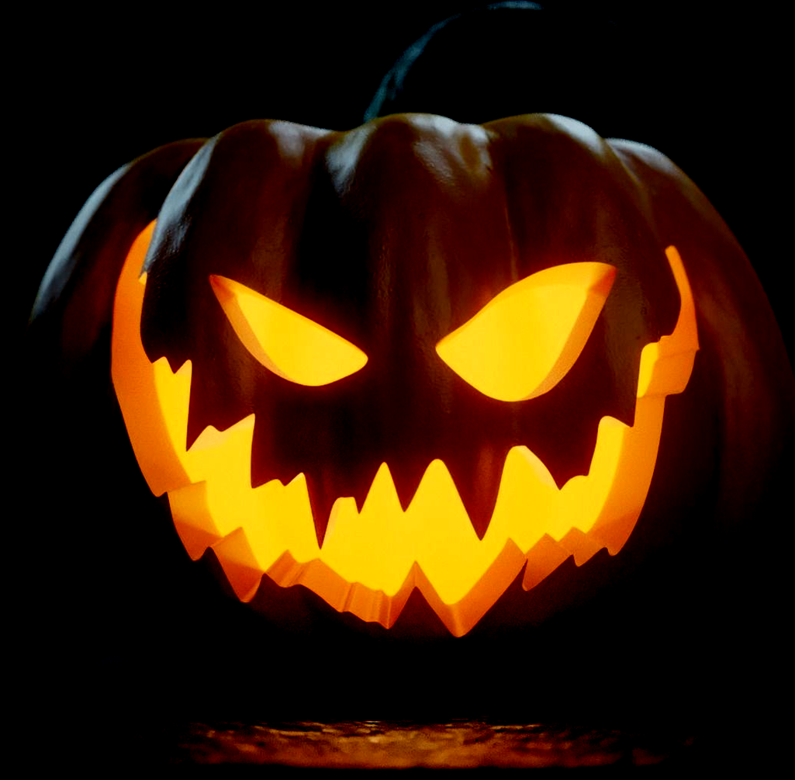

🎃 Crooked Cucurbits! 🎃
Hey kids! How about a pumpkin carving contest? Enter your creation for a chance to win under these categories:
- Most Creative
- Funniest
- Scariest
- Most Classic
All accepted entries will be displayed in the Crooked Path Pumpkin Patch, where the public will vote for their favorites!
1st, 2nd, and 3rd place winners in each category will receive a Crooked Path goody bag!

Contest Rules
- Contestants: Kids ages 5–10
- One entry per contestant
- Entry must be your own design – no templates
- No inappropriate entries will be allowed
- All entries must include name, age, and contact info
- Entries accepted: Sunday, October 19th, 12–5pm
- Displayed by volunteers in the Crooked Patch
- Judging: October 24–25 by public vote (Scariest, Funniest, Best Overall)
- Winners split into two brackets: Ages 5–7 & 8–10
- Winners announced & prizes awarded: October 31st, 3–5pm
- Winner photos taken for website (guardian must be present)
🎃 Happy Carving! 🎃